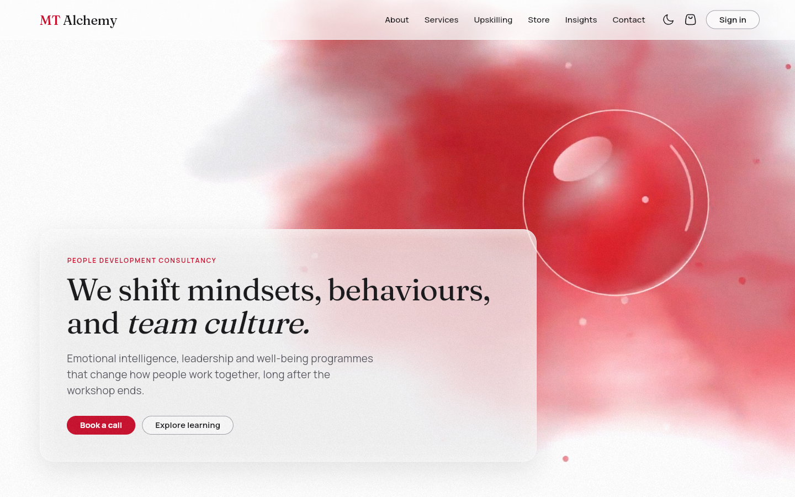
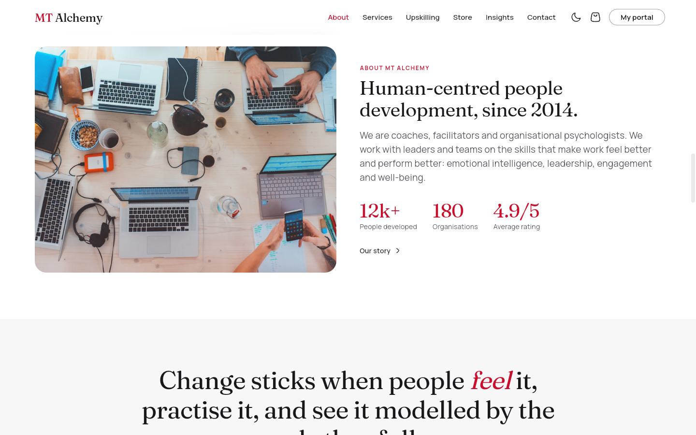
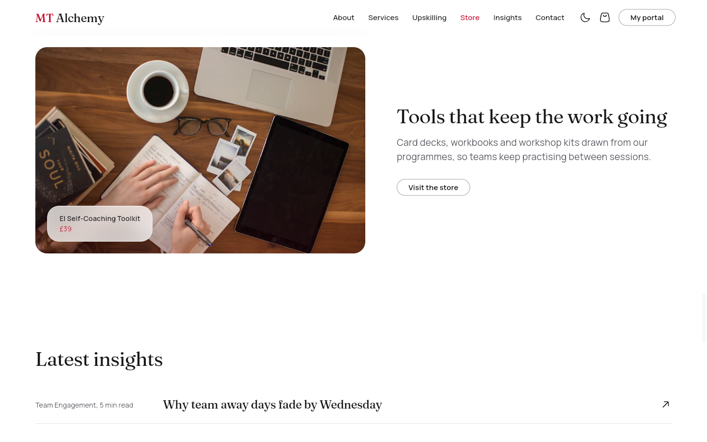
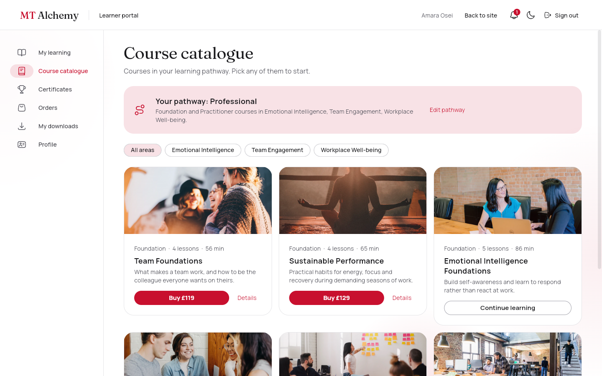
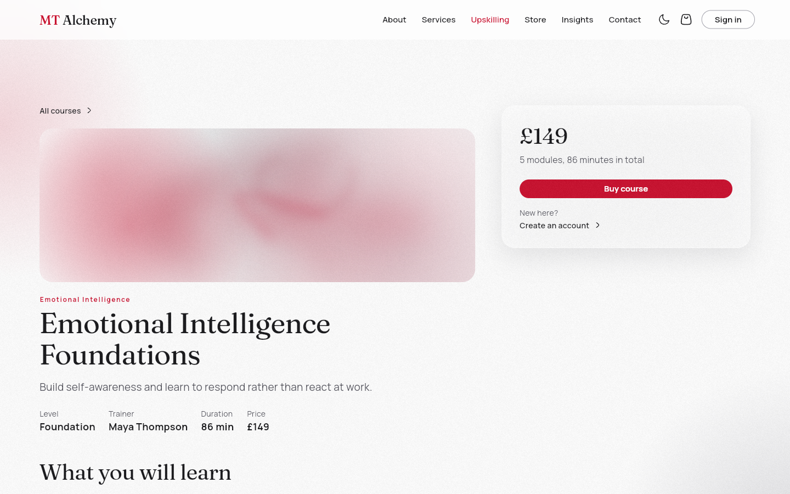
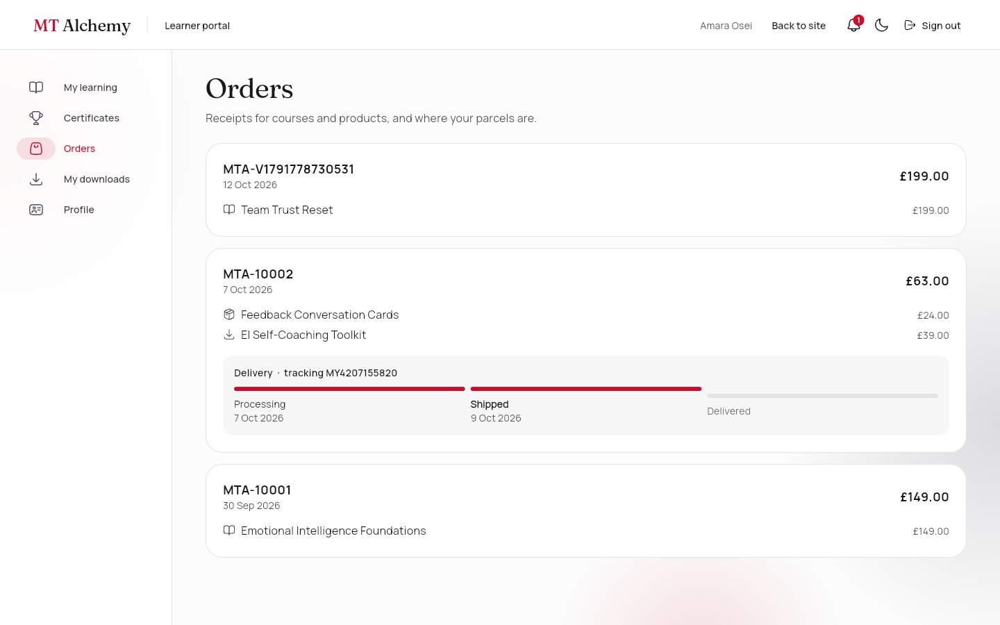
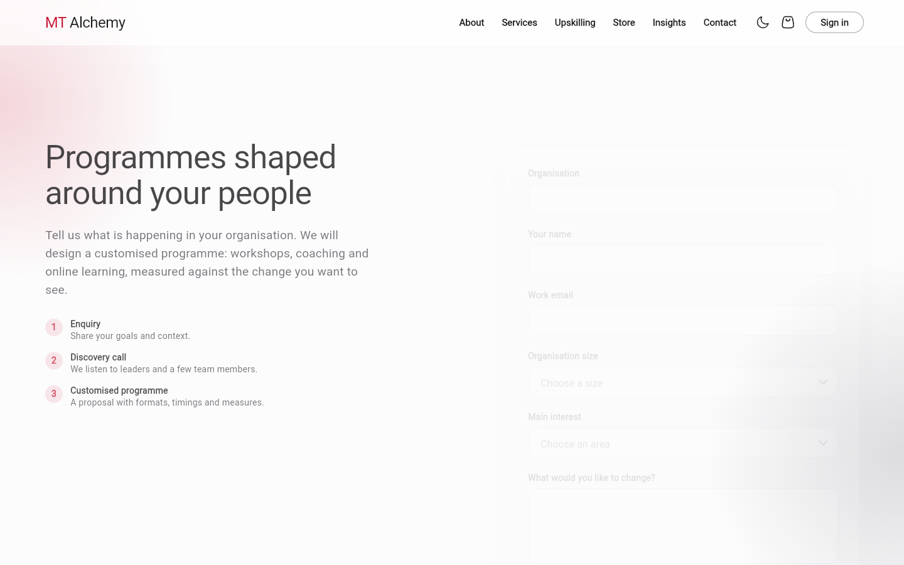
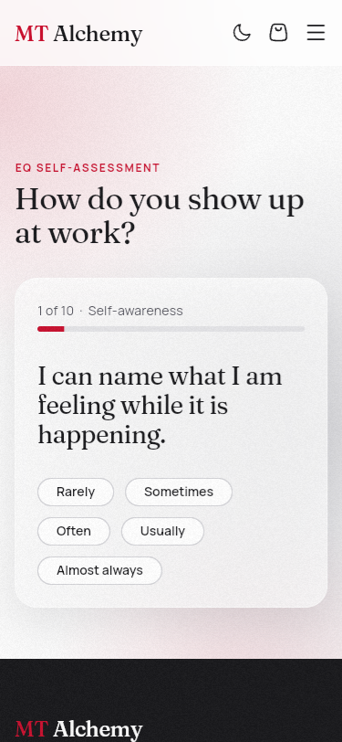

A human-centred learning and people-development platform for emotional intelligence, leadership, team engagement and workplace well-being. It combines a corporate website, a learning management system, an online store and role-based portals in one Flutter app on Firebase.
| Firebase project | mt-alchemy-net4207 (Authentication, Cloud Firestore in asia-southeast1, Hosting) |
| Client | Flutter 3.47 (web, Android, iOS), Provider state management, go_router |
| Roles | Guest · Individual learner · Employer · Trainer · Super Admin |
| Journeys | A Learning · B Digital product · C Physical product · D Employer · E Corporate enquiry |
| Date | October 2026 |
MT Alchemy's tagline is "We don't just run activities. We shift mindsets, behaviours, and team culture." The platform turns visitors into enquiries, learners and corporate clients through four connected modules:
A single landing page with sections for About, Services, Upskilling, Store, Insights and Contact. Each section links to a full page. There's also an Impact Stories carousel, a free EQ self-assessment and a "For organisations" enquiry form.
A course catalogue filtered by each learner's pathway, with purchase, enrolment and a modular course player (video, PDF, reading and quiz lessons). Progress is tracked, and completing a course issues a certificate with a public verification link.
Digital products are downloaded after payment. Physical products are shipped and tracked from Processing to Shipped to Delivered. One checkout handles products, courses and employer seats. Payments run in test mode.
Learners: learning, catalogue, certificates, orders, downloads and profile. Employers: employees, seats, assignments, progress and analytics charts. Trainers: course authoring. Super admins: users, products, orders and shipping, enquiries and content.
The app is a single Flutter codebase that talks directly to Firebase. There is no custom server: business rules run in the client stores, and Firestore security rules enforce who can read or write each document.
| Tool | Purpose |
|---|---|
tools/seed/seed.mjs | Creates the 8 demo accounts and the catalogue (12 courses, 6 products, articles, stories), an organisation, assignments, orders, shipping, downloads, reviews and an enquiry. It uses Firebase REST APIs and needs no npm packages. |
tools/seed/verify.mjs | Runs 33 live checks. It signs in as every role, performs each journey's writes, and confirms that forbidden writes are refused. |
video/ (Remotion) | Renders the landing loop (ink in water, a floating glass crystal, parallax particles) and the brand and services films to H.264, in light and dark versions. |
tools/make_pdfs.py | Generates the branded PDF workbooks and digital products served from /downloads. |
| Folder | Contents |
|---|---|
lib/data/ | backend.dart (Firebase access and friendly error messages), models/ (Course with lessons and quizzes, Product, AppUser, Organisation, Employee, Article, Review, CartItem), mock/ (seed catalogue), eligibility.dart |
lib/state/ | One ChangeNotifier per domain. Each store subscribes to the signed-in user's Firestore queries and exposes plain getters and async actions that return an error message or null. |
lib/router/ | routes.dart (every path), app_router.dart (shell routes, role guards, transitions), home_sections.dart (landing anchors) |
lib/screens/ | Public pages, learn/ (course player and lesson views), portal/ (learner, employer, trainer and super admin screens) |
lib/widgets/ | Reusable UI: GlassPanel, AlchemyButton, AnimatedCard, CardImage, Reveal, TiltCard, ReviewsSection, PathwayFields, the layout shells and the notification bell |
lib/theme/ | Colour, typography, spacing, radius and motion tokens for light and dark themes |
users/{uid} (role, organisation, pathway) and the user's organisation.enrolments where userId == uid.watch stores and rebuild automatically. CatalogStore starts with the bundled catalogue, so pages draw instantly and work offline. Firestore then replaces it live.Public pages share AppShell (one Scaffold with a glass AppBar and a drawer below 1024px). Signed-in pages share PortalShell (a second Scaffold with its own AppBar, a side rail or drawer, a notification bell, and one scroll area with a visible scrollbar).
Landing behaviour: on the home page, the menu items glide to the matching section of the landing page (HomeSections.navigate with Scrollable.ensureVisible). From any other page, they open the full page with a fade-and-lift transition. Each landing section also has a "See all" link.
| Role | Portal home | Can open |
|---|---|---|
| Guest | none | Public site. Portals and the course player redirect to sign-in and return afterwards. |
| Individual | /portal/me | My learning, Course catalogue, Certificates, Orders, My downloads, Profile, Course player |
| Employer | /portal/employer | Overview, Employees, Buy courses, Assign courses, Progress report, Analytics |
| Trainer | /portal/admin | Courses (create, edit, publish, delete) and the course editor |
| Super Admin | /portal/super | Dashboard (live totals), Users, Courses, Products, Orders and shipping, Enquiries, Content, plus the course editor |
Each entity is a top-level collection. Lessons and quiz questions are embedded in the course document, so the player loads in a single read. Order items are embedded in the order. The full ER diagram is in docs/ER_DIAGRAM.md.
| Collection | Key fields | Written by |
|---|---|---|
| users | name, email, role, orgId, careerStage, interests[], gender, country, hobbies[], disabled | Self at registration (individual or employer only), super admin |
| organizations | name, sector, size, ownerId, seats {courseId: n} | Employer |
| employees · assignments | orgId, name, email, team · employeeEmail, courseId | Employer |
| courses | title, level, serviceSlug, price, imageUrl, published, modules[] {type, mediaUrl, quiz[]} | Trainer, super admin |
| enrolments | userId, courseId, orderId or assignmentId, orgId, completedModuleIds[], quizScores, progress, status | Learner (needs a paid order or an assignment) |
| certificates | code, userId, courseId, userName, courseTitle, issuedAt (publicly readable) | Learner, only when the enrolment is complete |
| products · productCategories | type (digital or physical), stock, fileUrl, imageUrl, price | Super admin (checkout may only decrease stock) |
| carts · orders · payments | items · status, totals, orgId · amount, last4, gateway: test-mode | Buyer |
| shipping · downloads | status, tracking, history[] · url, downloadCount | Buyer creates them, super admin advances shipping |
| reviews · impactStories · articles | rating, comment · quote, metric · body[] | Learners · super admin · staff |
| enquiries · contactMessages | organisation, interest, status, proposal · message | Anyone (guests too). The super admin manages them. |
| notifications · assessments | userId, title, read · EQ scores | Staff and employers · learner |
firestore.rules reads the caller's role from users/{uid}. Key guarantees, each proven by verify.mjs against the live project:
complete.An EQ self-assessment with an animated profile and a recommended course, an Impact Stories carousel, reviews, notifications, dark mode, live admin totals, and public certificate verification.
At registration, a learner picks a career stage (which sets the course levels they can take) and one or more interest areas (which set the topics). A course is open to them only when it matches both. Learners can buy any course in that set. Other courses stay visible but locked, with the reason shown. Employer assignments bypass the rule because the organisation chooses for its staff.
| Career stage | Foundation | Practitioner | Leader |
|---|---|---|---|
| Student or graduate | ✔ | ||
| Professional | ✔ | ✔ | |
| Manager or team lead | ✔ | ✔ | |
| Senior leader | ✔ |
The catalogue holds 12 courses, one for every level in each of the four practice areas, so every combination of stage and interests has at least one course to choose from. The rule lives in lib/data/eligibility.dart, and the catalogue, course page and checkout all use it.
imageUrl that admins can change. The seeded red ink artwork is the fallback.| Check | Result |
|---|---|
flutter analyze | No issues |
flutter test (fake Firestore and mock Auth) | 43 tests: cart rules, checkout writes, declined cards, shipping states, enrolment, quiz pass and fail, certificates, seats and assignments, analytics buckets, validators, portal scrolling |
npm run verify (live Firebase) | 33 of 33 pass: every journey and every forbidden write, per role |
| Visual checks | Playwright screenshots at 1440px and 375px, in light and dark themes |
| Task | Command or place |
|---|---|
| Run locally | flutter run -d chrome |
| Build and serve | flutter build web --release then node tools/serve_web.mjs 8080 |
| Publish the site | firebase deploy --only hosting |
| Change rules or indexes | firebase deploy --only firestore, then npm run verify |
| Reset demo data | cd tools/seed && npm run seed |
| Day-to-day content | Trainer portal (courses), Super admin (products, users, orders, enquiries, content) |
Demo accounts (password alchemy123): amara@example.com (individual) · callum@northlight.example.com (employee) · priya@northlight.example.com (employer) · maya@mtalchemy.example.com (trainer) · admin@mtalchemy.example.com (super admin).







